La despedida del Going Merry.El despertar del Gear 5.
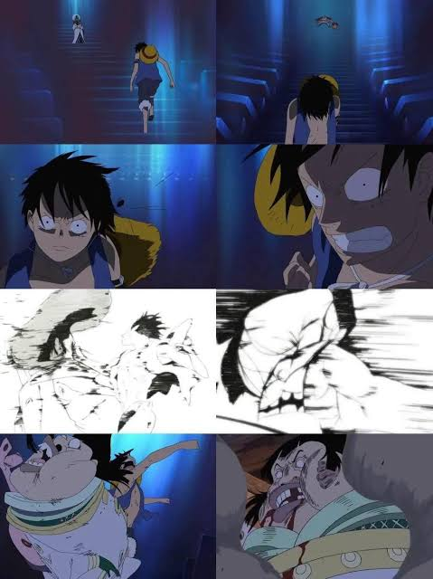
La separación de la tripulación en Sabaody.El espíritu de aventura de One Piece.
Referencias al anime
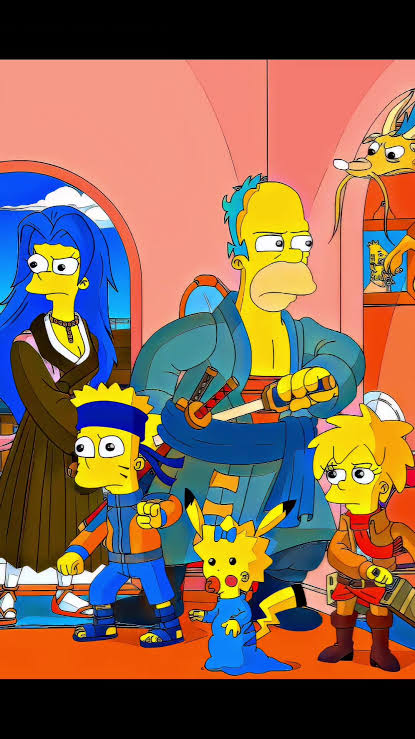
Una referencia a One Piece en Los Simpson.
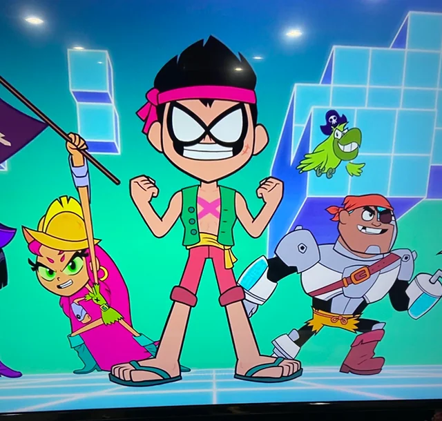
Un guiño a One Piece en Ataque de los Titanes.Homenaje a Zoro y sus espadas.
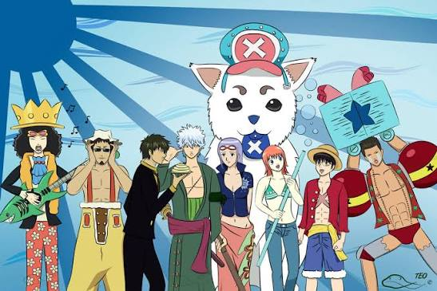
Otra referencia al universo de One Piece.Un reconocimiento directo a One Piece.
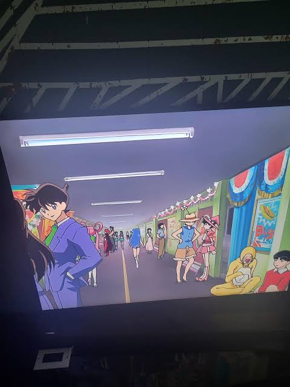
Un guiño a One Piece en Inuyasha.
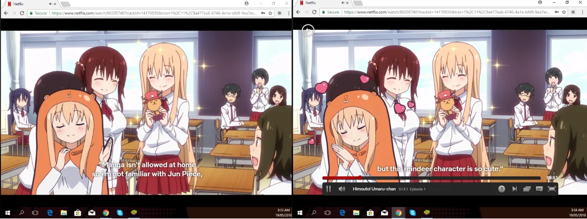
La referencia a Tony Tony Chopper.
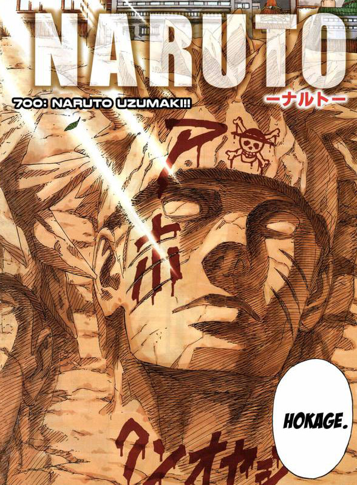
Un guiño a One Piece en Naruto.
Homenajes
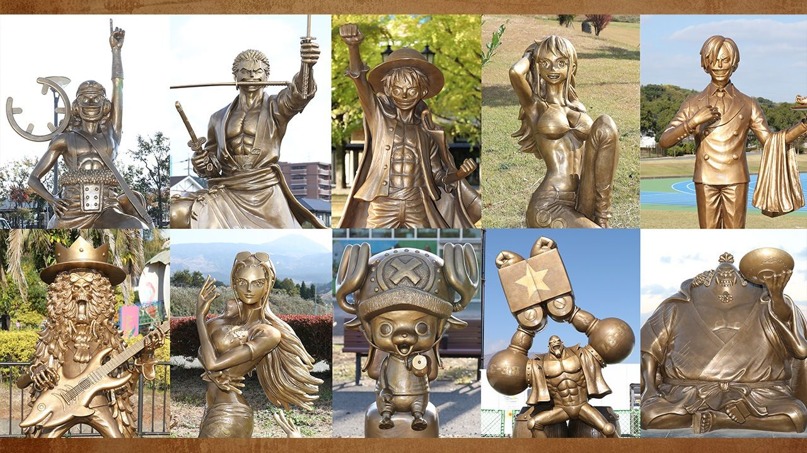
La ruta de estatuas de bronce de la tripulación en Kumamoto.
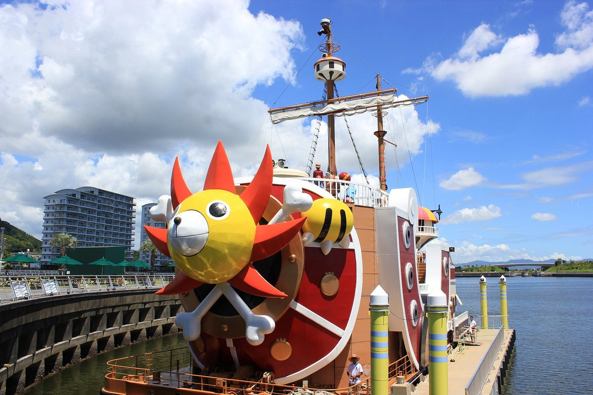
Un barco temático dedicado al universo de One Piece.
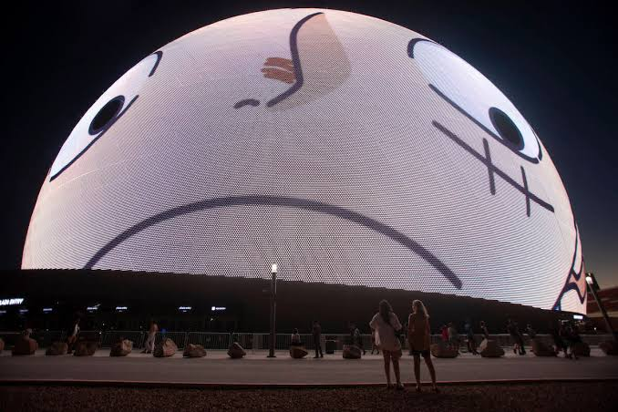
Una proyección colosal de Luffy en The Sphere.One Piece ocupa las pantallas de Times Square.
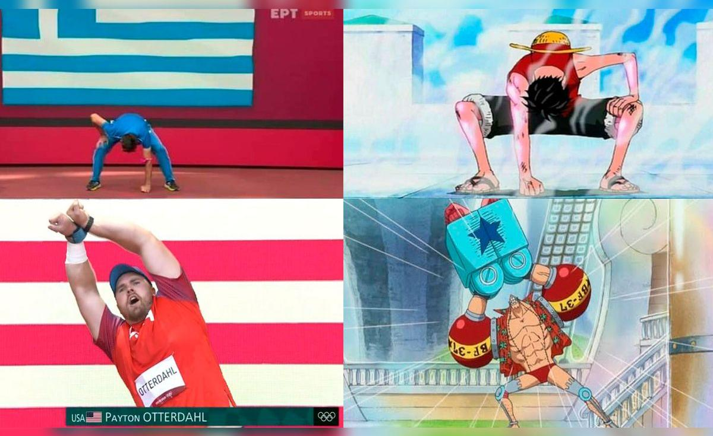
Los símbolos de Luffy llegan al mundo del deporte.Una pose inspirada en Luffy reproducida por futbolistas.El Jolly Roger como símbolo de libertad y resistencia.Un mural urbano celebra a la tripulación de Sombrero de Paja.
Frutas del diablo
Gomu Gomu no Mi: ejemplo de fruta Paramecia.Ope Ope no Mi: una Paramecia con poderes especiales.Bara Bara no Mi: otra fruta de tipo Paramecia.Ito Ito no Mi: una Paramecia que produce y controla hilos.Mera Mera no Mi: ejemplo de fruta Logia.